MAGNETOMETER CALIBRATION
The following script carries out the computation of the calibration parameters of the triaxial magnetometer which is included inside the Gaitwatch's trunk unit. We will use an ellipsoid fitting algorithm based the one proposed by Camps et al. (F. Camps, S. Harasse, and A. Monin. Numerical calibration for 3-axis accelerometers and magnetometers. In IEEE International Conference on Electro/Information Technology, 2009. EIT ’09, pages 217–221. IEEE, June 2009.). They present a theoretical and experimental steps of a method to compute gains, bias and non orthogonality factors of magnetometer and accelerometer sensors. The calibration procedure involves arbitrary rotations of the MIMU, so the set of maneuvers to gather the necessary data is very simple. For more information about this algorithm check Gaitwatch's user manual.
Contents
- 0) General and initial configuration.
- 1) Load raw calibration data and extract header information.
- 2) Remove erroneous values interactively.
- 3) Plot raw corrected magnetometer values.
- 4) Compute and store the calibration parameters.
- 5) Calibrate raw data.
- 6) Plot the calibrated data.
- 7) Computation of deviation from mean.
- Authors : Alberto Olivares and Kai Bötzel.
- Entities : Universidad de Granada & Ludwig-Maximilians Universität München.
- Version : 1.1.
- Last modification : 26/11/2013.
0) General and initial configuration.
Load GaitWatch's functions library.
gw = gwLibrary;
Define the magnitude measure by the sensor (magnetic field in this case).
magnitude = 'h';
Define the axes of the sensor.
sensor_axis = 'XYZ';
Define the position of the sensor.
position = 'center';
Define the body sement in which the sensor is placed.
segment = 'trunk';
Load GaitWatch's data structure.
load data/gWDataStruct.mat
Define the flag which controls if the figures are to be shown and stored or just stored
showPlot = 'yes';
1) Load raw calibration data and extract header information.
The first step is to load the raw magnetometer data which was gathered during the calibration maneuvers. The user can select between loading the data directly from GaitWatch or loading it from the hard drive.
S = {'Load data from GaitWatch','Load data from hard drive'};
Selection = listdlg('ListString',S,'Name',...
'Select the origin of the data','ListSize',[250 100],'SelectionMode',...
'single');

switch Selection
Load data from GaitWatch.
case 1
GW_comm;
data_path = strcat('data/calibration/magnetometer/trunk_magRawData.mat');
save(data_path,'data','FileHeader');
Load data from the hard drive.
case 2
load data/calibration/magnetometer/trunk_magRawData.mat end
And then, we extract some of the information contained in the header.
[f, cal_date, cal_start_time, cal_end_time, file_id, FileName] = gw.getFHinfo(FileHeader);
Build time signal.
len_data = length(data); time = (0:len_data-1) / f;
Reshape data (split channel 23 into 3 channels and append them to the data matrix)
[hx, hy, hz] = gw.getMagData(double(data(:,23)));
Compute the sampling frequency of the magnetometer.
f_mag = f/(length(data)/length(hx));
We now build a time signal using the newly computed frequency. This signal will only be used in figures (to plot magnetic field vs. time).
time_mag=zeros(1,length(hx)); for i=1:length(hx)-1 time_mag(i+1)=time_mag(i)+1/f_mag; end
2) Remove erroneous values interactively.
The magnetometer signals can contain large erroneous values. The following routine ('correct_mag_data') plots all 3 signals and asks the user to click on the erroneous values so they are removed.
hx = gw.correct_mag_data(hx); hy = gw.correct_mag_data(hy); hz = gw.correct_mag_data(hz);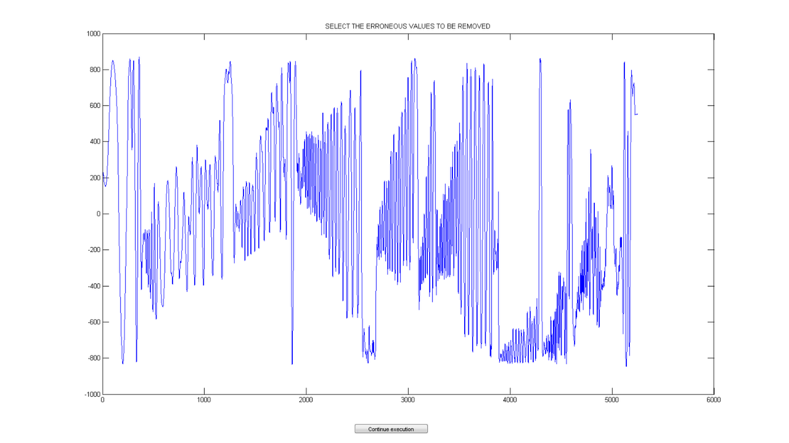 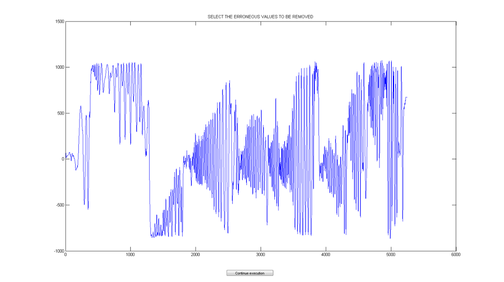 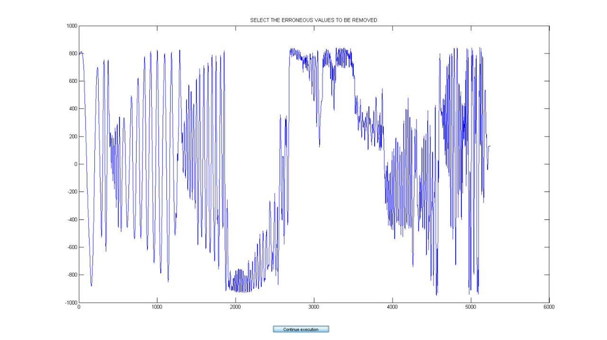
Interpolate the magnetometer signals
hx = interp1(time_mag,hx,time,'spline'); hy = interp1(time_mag,hy,time,'spline'); hz = interp1(time_mag,hz,time,'spline'); close all
3) Plot raw corrected magnetometer values.
Two figures are now created, one showing the corrected magnetometer signals and another one showing their 3D representation. These figures are only shown to the user if the 'showPlot' flag is set to 'yes' (see initial configuration). The figures are stored in the 'figures/calibration/magnetometer' folder.
if strcmpi(showPlot,'yes') figure subplot(3,1,1) plot(time,hx) title('CORRECTED MAGNETOMETER VALUES') xlabel('Time (s)') ylabel('Mag. field (raw)') legend('X axis') subplot(3,1,2) plot(time,hy) xlabel('Time (s)') ylabel('Mag. field (raw)') legend('Y axis') subplot(3,1,3) plot(time,hz) xlabel('Time (s)') ylabel('Mag. field (raw)') legend('Z axis') saveas(gcf,'figures/calibration/magnetometer/trunk_rawMagCorrValues.fig') figure plot3(hx,hy,hz,'.') title('RAW MAGNETIC FIELD ELLIPSOID') xlabel('X axis') ylabel('Y axis') zlabel('Z axis') axis([-1500 1500 -1500 1500 -1500 1500]); saveas(gcf,'figures/calibration/magnetometer/trunk_rawMagCorrValues3D.fig') end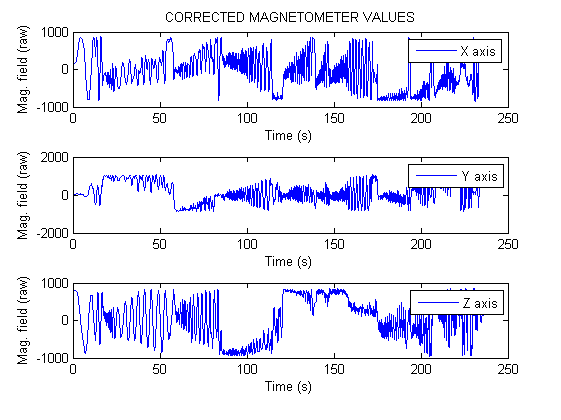 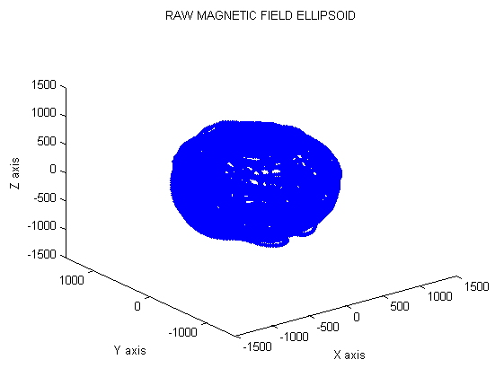
4) Compute and store the calibration parameters.
Now the calibration parameters will be computed.
We first need to define the sensor which will be calibrated and define the reference value. For the magnetometer, the reference value is the local value of the magnitude of Earth's magnetic field in Munich (in Gauss).
ref_val = 0.482352;
sensor = 'mag';
We then call the routine which returns 'alpha' and 'beta' which are the scale factor and non-orghotonality matrix and the bias vector respectively .
[alpha, beta] = gw.comp_acc_mag_cal_params(sensor, hx, hy, hz, ref_val);
Warning: Length of lower bounds is < length(x); filling in missing lower bounds with -Inf. Warning: Length of upper bounds is < length(x); filling in missing upper bounds with +Inf. Local minimum possible. lsqnonlin stopped because the final change in the sum of squares relative to its initial value is less than the selected value of the function tolerance.
Once computed, we store them together with the date and time in which the data were gathered.
save('data/calibration/magnetometer/trunk_magCalPArams.mat', 'alpha',... 'beta', 'cal_date', 'cal_start_time', 'cal_end_time');
5) Calibrate raw data.
After finding the calibration parameters, we will apply them to the raw data which was gathered during the calibration maneuvers. This way we will see the effects of the calibration.
hxC = zeros(1,length(hx)); hyC = zeros(1,length(hy)); hzC = zeros(1,length(hz)); for i = 1 : length(hx) H = inv(alpha) * ([hx(i);hy(i);hz(i)] - beta'); hxC(i) = H(1); hyC(i) = H(2); hzC(i) = H(3); end
6) Plot the calibrated data.
if strcmpi(showPlot,'yes')
Plot the 3D representation of the calibrated data.
figure;
plot3(hxC,hyC,hzC,'o');
xlabel('hx');
ylabel('hy');
zlabel('hz');
axis([-1 1 -1 1 -1 1])
saveas(gcf,'figures/calibration/magnetometer/trunk_calMagCorrValues3D.fig')
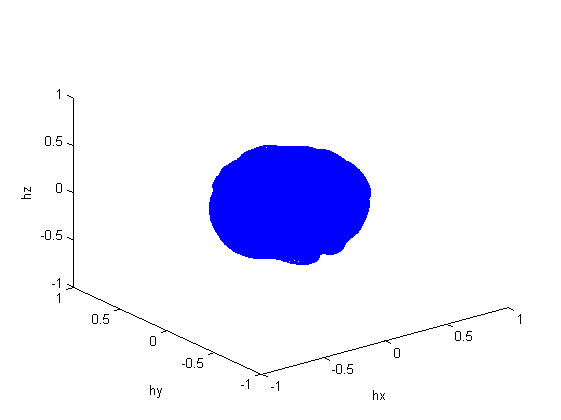 Plot raw vs. calibrated data.
figure
subplot(3,2,1)
plot(time,hx)
axis([0 time(end) -2000 2000])
xlabel('Time (s)')
ylabel('Mag. field (Raw)')
title('X axis (raw)')
subplot(3,2,2)
plot(time,hxC)
axis([0 time(end) -1 1])
xlabel('Time (s)')
ylabel('Mag. field (Gauss)')
title('X axis (calibrated)')
subplot(3,2,3)
plot(time,hy)
axis([0 time(end) -2000 2000])
xlabel('Time (s)')
ylabel('Mag. field (Raw)')
title('Y axis (raw)')
subplot(3,2,4)
plot(time,hyC)
axis([0 time(end) -1 1])
xlabel('Time (s)')
ylabel('Mag. field (Gauss)')
title('Y axis (calibrated)')
subplot(3,2,5)
plot(time,hz)
axis([0 time(end) -2000 2000])
xlabel('Time (s)')
ylabel('Mag. field (Raw)')
title('Z axis (raw)')
subplot(3,2,6)
plot(time,hzC)
axis([0 time(end) -1 1])
xlabel('Time (s)')
ylabel('Mag. field (Gauss)')
title('Z axis (calibrated)')
saveas(gcf,'figures/calibration/magnetometer/trunk_rawVsCal.fig')
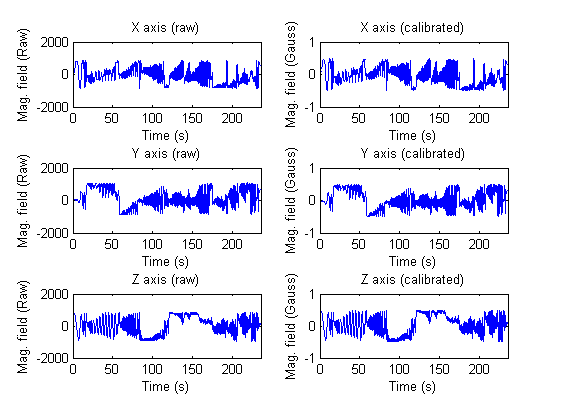 Plot raw data from 4 different points of view (3D and the three plane projections).
figure
subplot(2,2,1)
plot3(hx,hy,hz,'.')
xlabel('X axis','FontSize',14,'FontName','Arial')
ylabel('Y axis','FontSize',14,'FontName','Arial')
zlabel('Z axis','FontSize',14,'FontName','Arial')
set(gca,'FontSize',12,'FontName','Arial','DataAspectRatio',[1 1 1],'PlotBoxAspectRatio',[1 1 1])
subplot(2,2,2)
plot3(hx,hy,hz,'.')
xlabel('X axis','FontSize',14,'FontName','Arial')
ylabel('Y axis','FontSize',14,'FontName','Arial')
zlabel('Z axis','FontSize',14,'FontName','Arial')
view(180,0)
set(gca,'FontSize',12,'FontName','Arial','DataAspectRatio',[1 1 1],'PlotBoxAspectRatio',[1 1 1])
subplot(2,2,3)
plot3(hx,hy,hz,'.')
xlabel('X axis','FontSize',14,'FontName','Arial')
ylabel('Y axis','FontSize',14,'FontName','Arial')
zlabel('Z axis','FontSize',14,'FontName','Arial')
view(90,0)
set(gca,'FontSize',12,'FontName','Arial','DataAspectRatio',[1 1 1],'PlotBoxAspectRatio',[1 1 1])
subplot(2,2,4)
plot3(hx,hy,hz,'.')
xlabel('X axis','FontSize',14,'FontName','Arial')
ylabel('Y axis','FontSize',14,'FontName','Arial')
zlabel('Z axis','FontSize',14,'FontName','Arial')
view(0,90)
set(gca,'FontSize',12,'FontName','Arial','DataAspectRatio',[1 1 1],'PlotBoxAspectRatio',[1 1 1])
saveas(gcf,'figures/calibration/magnetometer/trunk_rawMag3D_4POV.fig')
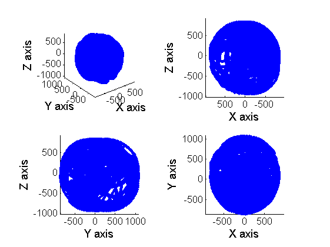 Plot calibrated data from 4 different points of view (3D and the three plane projections).
figure
subplot(2,2,1)
plot3(hxC,hyC,hzC,'.')
xlabel('X axis','FontSize',14,'FontName','Arial')
ylabel('Y axis','FontSize',14,'FontName','Arial')
zlabel('Z axis','FontSize',14,'FontName','Arial')
axis([1.1*min(hxC) 1.1*max(hxC) 1.1*min(hyC) 1.1*max(hyC) 1.1*min(hzC) 1.1*max(hzC)])
set(gca,'FontSize',12,'FontName','Arial','DataAspectRatio',[1 1 1],'PlotBoxAspectRatio',[1 1 1])
subplot(2,2,2)
plot3(hxC,hyC,hzC,'.')
xlabel('X axis','FontSize',14,'FontName','Arial')
ylabel('Y axis','FontSize',14,'FontName','Arial')
zlabel('Z axis','FontSize',14,'FontName','Arial')
axis([1.1*min(hxC) 1.1*max(hxC) 1.1*min(hyC) 1.1*max(hyC) 1.1*min(hzC) 1.1*max(hzC)])
view(180,0)
set(gca,'FontSize',12,'FontName','Arial','DataAspectRatio',[1 1 1],'PlotBoxAspectRatio',[1 1 1])
subplot(2,2,3)
plot3(hxC,hyC,hzC,'.')
xlabel('X axis','FontSize',14,'FontName','Arial')
ylabel('Y axis','FontSize',14,'FontName','Arial')
zlabel('Z axis','FontSize',14,'FontName','Arial')
axis([1.1*min(hxC) 1.1*max(hxC) 1.1*min(hyC) 1.1*max(hyC) 1.1*min(hzC) 1.1*max(hzC)])
view(90,0)
set(gca,'FontSize',12,'FontName','Arial','DataAspectRatio',[1 1 1],'PlotBoxAspectRatio',[1 1 1])
subplot(2,2,4)
plot3(hxC,hyC,hzC,'.')
xlabel('X axis','FontSize',14,'FontName','Arial')
ylabel('Y axis','FontSize',14,'FontName','Arial')
zlabel('Z axis','FontSize',14,'FontName','Arial')
axis([1.1*min(hxC) 1.1*max(hxC) 1.1*min(hyC) 1.1*max(hyC) 1.1*min(hzC) 1.1*max(hzC)])
view(0,90)
set(gca,'FontSize',12,'FontName','Arial','DataAspectRatio',[1 1 1],'PlotBoxAspectRatio',[1 1 1])
saveas(gcf,'figures/calibration/magnetometer/trunk_calMag3D_4POV.fig')
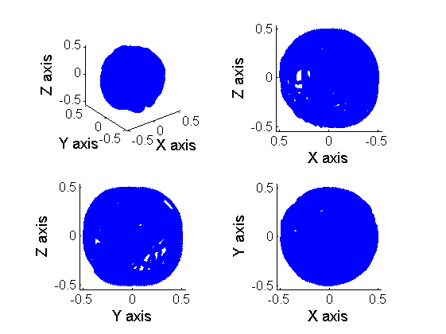 Plot the magnitude of the calibrated magnetic field, its mean and the local reference value.
mag_magnitude=sqrt(hxC.^2+hyC.^2+hzC.^2);
mag_mean=mean(mag_magnitude);
line_fit=ones(1,length(mag_magnitude))*mag_mean;
figure;
plot(time,mag_magnitude);
hold on;
plot(time,line_fit,'r');
plot(time,ref_val*ones(1,length(time)),'black','linewidth',2)
axis([0 time(end) .95*min(mag_magnitude) 1.05*max(mag_magnitude)])
legend('Calibrated magnetic field magnitude','Mean','Theoretical value');
xlabel('Time(s)','FontSize',14,'FontName','Arial');
ylabel('Magnetic field (Gauss)','FontSize',14,'FontName','Arial');
set(gca,'FontSize',12,'FontName','Arial');
saveas(gcf,'figures/calibration/magnetometer/trunk_calMagModuleVsMean.fig')
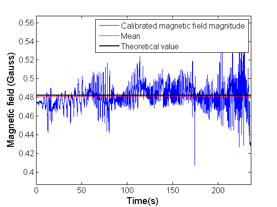 end
7) Computation of deviation from mean.
The last step is to compute the deviation of the mean of the computed magnitude with respect to the local reference value.
theor_mag_mod = ref_val*ones(1,length(time)); mag_error_mean=sqrt(mean((mag_magnitude-theor_mag_mod).^2)); mag_error=sqrt((mag_magnitude-theor_mag_mod).^2); if strcmpi(showPlot,'yes') figure; plot(time,mag_error); hold on; plot(time,mag_error_mean*ones(1,length(mag_magnitude)),'r'); xlabel('Time (s)') ylabel('Mag. field (Gauss)') legend('Magnitude Error','RMSE') saveas(gcf,'figures/calibration/magnetometer/trunk_calMagError.fig') end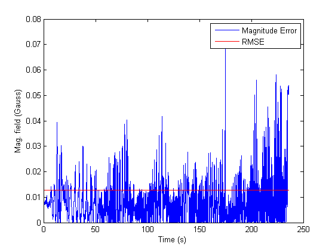